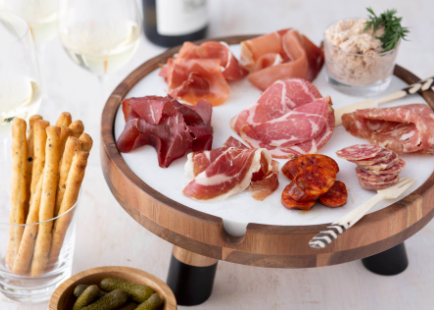

With so much to pick from how do you even start pairing items?
The beginning step is the easiest, pick two products you like! This goes for cheese, beer, charcuterie, and wine. Identify what you like first and what is one product that is essential to you and then we can go from there.
All right - here is where things can get a bit more tricky. If you decided you wanted some dry salami such as Sopressata or Finocchiona our suggestion is to pick a creamy cheese with that. Often times some spreadable goat cheese will go great with this! If you want to take it up a notch pick a sweeter one such as blueberry or fig goat cheese.